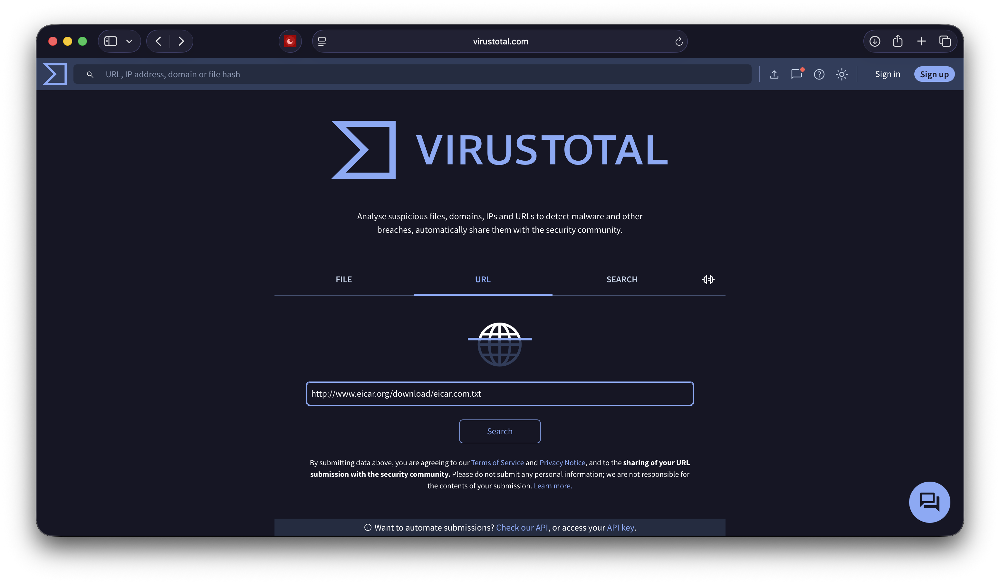

VirusTotal: Havolani bosish nega xavfli?
Linkni bosish — shunchaki saytga kirish emas
Telegram yoki Email orqali kelgan notanish havolani (link) bosish — ko’chada yotgan fleshkani kompyuterga tiqish bilan barobar xavfli.
Ko’pchilik: “Men hech narsa yuklab olmadim-ku, shunchaki saytni ochib ko’rdim”, deb o’ylaydi. Lekin aslida havola bosilganda brauzeringiz yuzlab qator kodlarni avtomatik ishga tushiradi.
Bugun havolalar ortida qanday xavf yashiringani, “bosish” jarayonida texnik tomondan nima sodir bo’lishi va VirusTotal yordamida buni qanday aniqlashni ko’rib chiqamiz.
1. Texnik tahlil: Linkni bosganda nima bo’ladi?
Havolani bosish — bu kompyuteringizga “Mana shu saytdagi barcha buyruqlarni bajar!” deb ruxsat berish degani. Bu jarayonda quyidagi xavflar bo’lishi mumkin:
A. Drive-by Download (Fon rejimida yuklash)
Siz saytga kirasiz, sayt esa bildirmasdan brauzeringizdagi zaifliklarni qidiradi. Agar tizimingiz yangilanmagan bo’lsa, sayt sizdan so’ramasdan zararli faylni (masalan, Troyan) yuklaydi va ishga tushiradi. Siz buni sezmaysiz ham.
B. Zararli Skriptlar (JavaScript)
Hozirgi saytlar JavaScript tilida ishlaydi. Zararli havola brauzeringizda maxsus skriptni ishga tushirishi mumkin. Bu skript sizning “Cookie” fayllaringizni (sessiyani) o’g’irlaydi. Natijada xaker parolingizni bilmasdan turib, sizning nomingizdan Facebook yoki Instagramga kira oladi.
C. Fishing (Soxta sahifa)
Havola sizni bank yoki ijtimoiy tarmoqning nusxasi yaratilgan soxta saytga olib boradi. Siz “Login” qilaman deb o’z parolingizni o’z qo’lingiz bilan xakerga topshirasiz.
2. Yechim: VirusTotal
Xo’sh, havolani qanday qilib xavfsiz tekshirish mumkin? Buning uchun VirusTotal xizmatidan foydalanamiz.
Bu Google kompaniyasiga tegishli platforma bo’lib, u fayllar va havolalarni dunyodagi 70 dan ortiq antivirus bazalari (Kaspersky, ESET, BitDefender va h.k.) orqali tekshirib beradi.
3. Amaliy qism: Havolani tekshirish tartibi
Tasavvur qiling, sizga shubhali xabar keldi: “Siz yutug’ga ega bo’ldingiz! Qabul qilish uchun mana bu yerni bosing: http://shubhali-sayt.com”
Oltin qoida: Havolani aslo bosmang! Uni ustiga bosib turib, nusxalab oling (Copy).
1-qadam: Saytga kirish
Brauzeringizda virustotal.com saytini oching.
2-qadam: URL bo’limini tanlash
Saytda uchta bo’lim bor: File, URL, Search. Bizga URL kerak. Nusxalab olingan havolani shu yerga tashlaymiz (Paste) va “Enter” tugmasini bosamiz.

3-qadam: Natijani ko’rish
Sayt bir necha soniya ichida havolani to’liq tahlil qiladi.
- Yashil (Clean): Havola toza, antiviruslar xavf topmadi.
- Qizil (Malicious/Phishing): Diqqat! Bu havola xavfli.
Quyidagi rasmda xavfli havola qanday aniqlanishi ko’rsatilgan. Bir nechta antiviruslar uni “Phishing” yoki “Malicious” deb belgilagan.

4. Qo’shimcha ma’lumotlar
VirusTotal shunchaki “yaxshi” yoki “yomon” demaydi, u texnik ma’lumotlarni ham beradi. “Details” bo’limida quyidagilarni ko’rish mumkin:
- Final URL: Ba’zan havola sizni boshqa manzilga yo’naltirib yuboradi (Redirect). VirusTotal havolaning asl manzilini ko’rsatadi.
- Server IP: Sayt qaysi davlatdagi serverda joylashgani.
Xulosa
Kiberxavfsizlikda eng zaif nuqta — bu texnika emas, balki foydalanuvchining o’zi. Eng kuchli antivirus ham, agar siz o’z qo’lingiz bilan ruxsat bersangiz, yordam berolmaydi.
Shuning uchun odatni o’zgartiring:
- Shubhali havolani ko’rdingizmi?
- Bosmang.
- Nusxalang va VirusTotal orqali tekshiring.
Bu oddiy harakat shaxsiy ma’lumotlaringiz va pullaringizni saqlab qolishi mumkin.